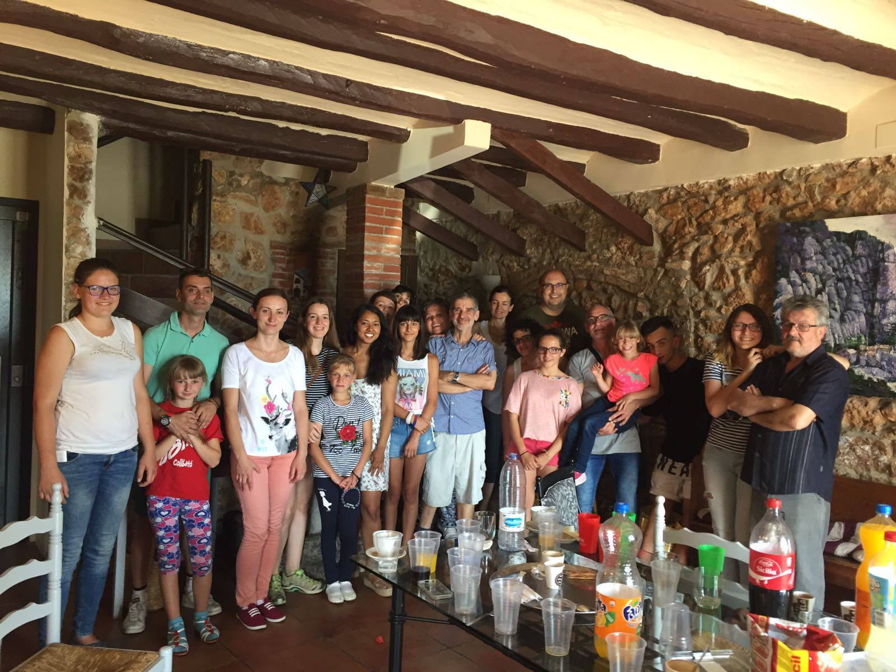

Una gran família solidària
El projecte d’acollida no seria possible sense la força col·lectiva de totes les persones que hi participen. Membres de l’Associació, famílies acollidores, voluntaris, socis i esponsors treballen colze a colze per garantir que els infants gaudeixin d’una experiència enriquidora i plena de valors.
L’Associació com a motor
Els membres de l’entitat són els que impulsen i coordinen cada detall del projecte, assegurant que tot estigui organitzat i que cada infant i família rebi el suport necessari. La seva tasca és la columna vertebral que dona estabilitat i direcció a totes les accions.
Un treball compartit
Aquest esforç no seria possible sense les famílies acollidores, que obren les portes de casa seva, ni sense els voluntaris, que acompanyen en el dia a dia i faciliten les activitats. També hi tenen un paper clau els socis i esponsors, que amb la seva col·laboració econòmica i logística permeten mantenir viu el projecte.
Una gran família unida
Junts formen una gran família solidària, on cada persona aporta el millor de si mateixa. Aquesta unió fa que els infants se sentin acollits, estimats i segurs, i que les famílies i col·laboradors visquin una experiència transformadora i plena de sentit.
Mirant cap al futur
L’objectiu comú de tots és seguir creixent i ampliant l’abast del projecte. Amb més mans i més cors, es pot continuar oferint oportunitats i esperances a molts més nens i nenes que ho necessiten.
← Tornar al blog